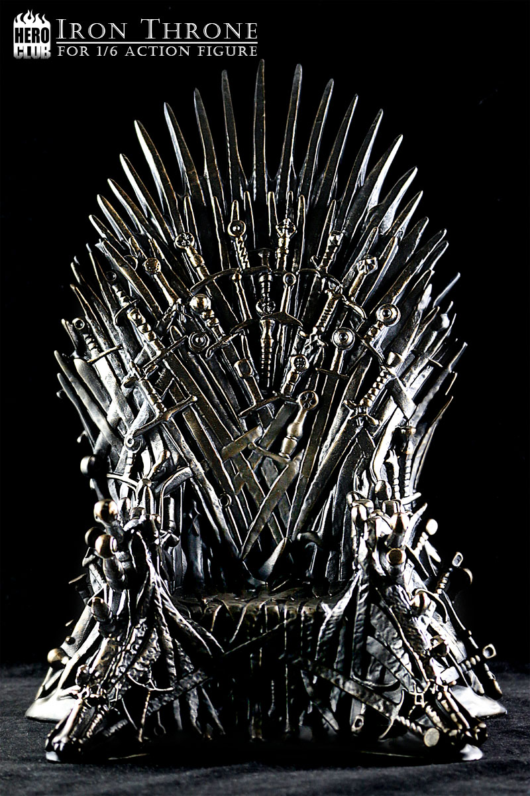

What is Game of Thrones?
Game of Thrones is an American fantasy drama television series created by David Benioff and D. B. Weiss for HBO. It is an adaptation of A Song of Ice and Fire, George R. R. Martin's series of fantasy novels, the first of which is A Game of Thrones.
Set on the fictional continents of Westeros and Essos, Game of Thrones has several plots and a large ensemble cast and follows several story arcs. One arc is about the Iron Throne of the Seven Kingdoms and follows a web of alliances and conflicts among the noble dynasties either vying to claim the throne or fighting for independence from it. Another focuses on the last descendant of the realm's deposed ruling dynasty, who has been exiled and is plotting a return to the throne, while another story arc follows the Night's Watch, a brotherhood defending the realm against the fierce peoples and legendary creatures of the North.
Setting
Game of Thrones is roughly based on the storylines of A Song of Ice and Fire,[3][4] set in the fictional Seven Kingdoms of Westeros and the continent of Essos. The series chronicles the violent dynastic struggles among the realm's noble families for the Iron Throne, while other families fight for independence from it. It opens with additional threats in the icy North and Essos in the east.[5] Showrunner David Benioff jokingly suggested "The Sopranos in Middle-earth" as Game of Thrones' tagline, referring to its intrigue-filled plot and dark tone in a fantasy setting of magic and dragons.[6] In a 2012 study, out of 40 recent television drama shows, Game of Thrones ranked second in deaths per episode, averaging 14 deaths.[
Themes
The series is generally praised for what is perceived as a sort of medieval realism.[8][9] George R.R. Martin set out to make the story feel more like historical fiction than contemporary fantasy, with less emphasis on magic and sorcery and more on battles, political intrigue, and the characters, believing that magic should be used moderately in the epic fantasy genre.[10][11][12] Martin has stated that "the true horrors of human history derive not from orcs and Dark Lords, but from ourselves."[13] A common theme in the fantasy genre is the battle between good and evil, which Martin says does not mirror the real world.[14] Just like people's capacity for good and for evil in real life, Martin explores the questions of redemption and character change.[15] The series allows the audience to view different characters from their perspective, unlike in many other fantasies, and thus the supposed villains can provide their side of the story.[12][16] Benioff said, "George brought a measure of harsh realism to high fantasy. He introduced gray tones into a black-and-white universe."[12] In early seasons, under the influence of the A Song of Ice and Fire books, main characters were regularly killed off, and this was credited with developing tension among viewers.[17] In later seasons, critics pointed out that certain characters had developed "plot armor" to survive in unlikely circumstances, and attributed this to Game of Thrones deviating from the novels to become more of a traditional television series.[17] The series also reflects the substantial death rates in war.
 Depiction of the capitol of Westeros, Kings Landing
Depiction of the capitol of Westeros, Kings Landing
Popularity
Game of Thrones attracted a record viewership on HBO and has a broad, active, and international fan base. It was acclaimed by critics for its acting, complex characters, story, scope, and production values, although its frequent use of nudity and violence (including sexual violence) was criticized. The series received 58 Primetime Emmy Awards, the most by a drama series, including Outstanding Drama Series in 2015, 2016, 2018, 2019. Its other awards and nominations include three Hugo Awards for Best Dramatic Presentation (2012–2014), a 2011 Peabody Award, and five nominations for the Golden Globe Award for Best Television Series – Drama (2012 and 2015–2018). In 2019, the show's final season established a new record for most Emmy nominations received in the same year by any regular series with 32, breaking the 25 years long record of 26 nominations established by NYPD Blue in 1994; it also established Game of Thrones as the drama series with the most overall Emmy nominations, with a total of 161.[2]
Of the ensemble cast, Peter Dinklage has won four Primetime Emmy Awards for Outstanding Supporting Actor in a Drama Series (2011, 2015, 2018, and 2019) and the Golden Globe Award for Best Supporting Actor – Series, Miniseries or Television Film (2012) for his performance as Tyrion Lannister. Alfie Allen, Gwendoline Christie, Emilia Clarke, Nikolaj Coster-Waldau, Lena Headey, Kit Harington, Sophie Turner, Diana Rigg, Carice van Houten, Max von Sydow, and Maisie Williams have also received Primetime Emmy Award nominations for their performances.